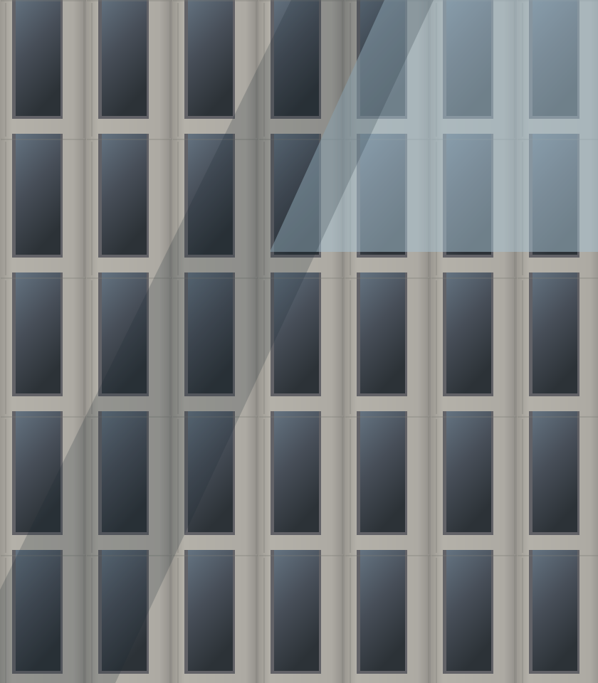

۰۱ / مسکن
خانهای برای نور، خلوت و زندگی روزمره.

■ مسکونیخانه، فضای کار و بازسازی. از نخستین طرح تا روزی که کلید میچرخه.
گفتوگو دربارهٔ پروژه ←خانهای برای نور، خلوت و زندگی روزمره.
خوانش دوبارهٔ استخوانبندی موجود.
فضایی که به جریان کار تیم شکل میدهد.
رد نور، شیب زمین و جنس مصالح، تصمیمهای نخست هر پروژه را شکل میدهند. در دفتر ما، ماکت و نقشه کنار هم کامل میشوند.
دیدن پروژهها ←عمق قاب، میزان روشنایی اتاق را در ساعتهای مختلف تغییر میدهد.
در بازسازی، حفظ دیوارهای اصلی نخستین تصمیم ماست.
جزئیات اتصال قطعات چوبی را پیش از اجرا در اندازهٔ واقعی میسازیم.
موقعیت، کاربری و متراژ تقریبی زمین یا بنا را برای جلسهٔ اول یادداشت کنید.
تهران، خیابان انقلاب، نزدیک ایستگاه مترو